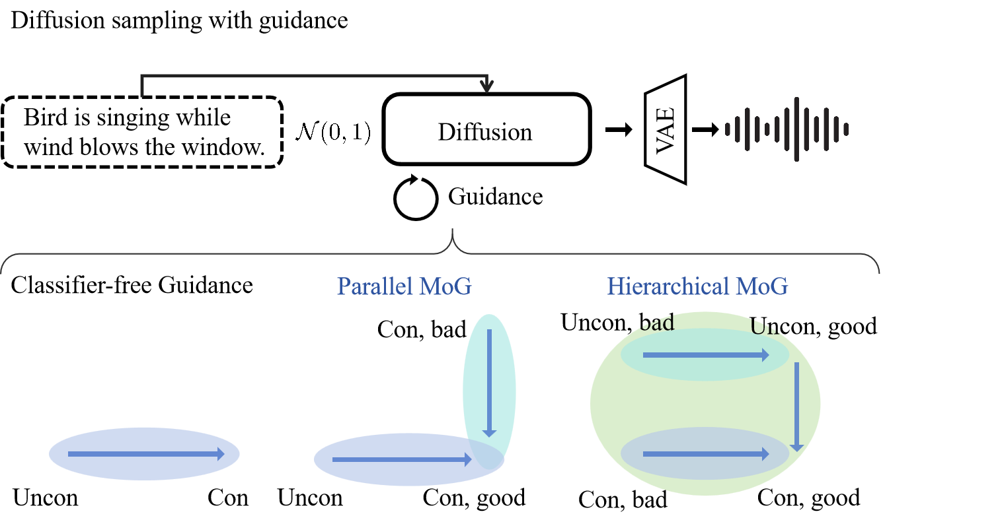
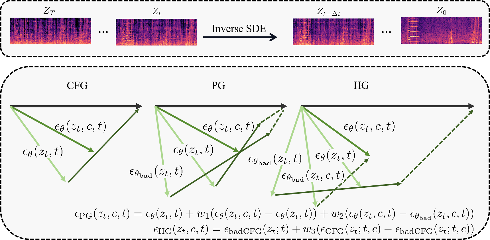
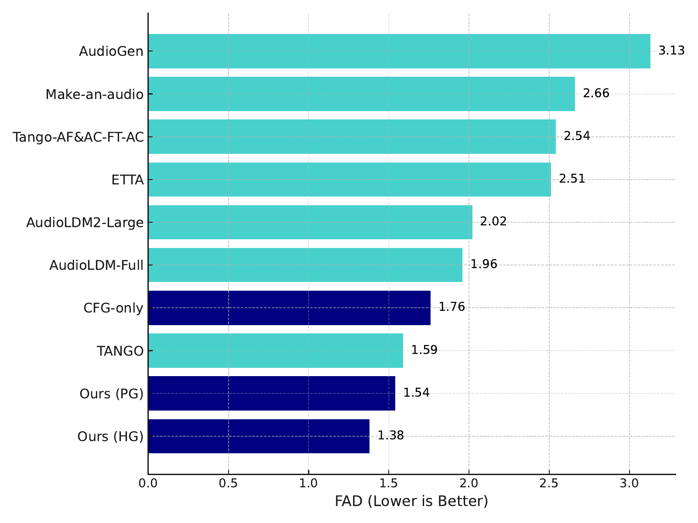

Beyond CFG: Improving Diffusion based Text-to-Audio
Generation with Mixture of Guidance
Anonymous*1
1Anonymous University
Abstract
Diffusion models for text-to-audio (T2A) generation has been extensively investigated from perspectives such as data space, network architecture, and condition information, while previous innovations usually require a model re-training stage.
At inference, the classifier-free guidance (CFG) is uniformly employed to improve the T2A generation quality, where the guidance of text condition is strengthened with a scaling factor.
However, as discussed in recently proposed Autoguidance (AG), the nature of CFG inevitably sacrifices the diversity of generated results and may suffer from suboptimal performance.
In this work, toward improving T2A generation quality in a training-free manner, we introduce an improved sampling algorithm: mixture of guidance (MoG).
Different from CFG and AG guiding diffusion models from a single direction, e.g., the condition or the bad version, we discuss their respective roles and investigate the methods to combine their advantages.
Specifically, we present two strategies: parallel MoG and hierarchical MoG. We first show that CFG and AG can be employed in parallel to yield cumulative advantages.
Furthermore, we propose integrating them hierarchically which expresses the potential of their joint guidance term: bad version of unconditional model.
We experimentally demonstrate that: 1) MoG improves the generation quality of T2A without compromising the benefits of CFG; 2) given the same inference speed, MoG distinctively outperforms CFG across different sampling steps.



Examples of prompts in AudioCaps testset
Description
Ours (HG)
Ours (PG)
CFG-only
AudioLDM 2
Ground Truth
A honking horn from an oncoming train
A motor engine humming as liquid sprays and music plays in the background
An engine idling followed by the engine revving
Some humming followed by a toilet flushing
A machine is drilling
A siren with people talking faintly in the background
A distant horn ring as a vehicle approaches
A man is speaking with people talking and whooshing noises in the background
A person speaking, followed by a number of people laughing
A child crying and a car door closing
Examples of prompts in MusicCaps
Description
Ours (HG)
CFG-only
AudioLDM 2-Music
Ground Truth
The Pop song features harmonizing vocals singing over energetic crash cymbals, groovy bass guitar, wide electric guitar melody, punchy snare and soft kick hits. There is a short drum break at the very beginning of the loop. It sounds happy, nostalgic and euphoric, as it gives off vibes of a Christmas song.
This is a religious music piece. There is a female vocalist singing melodically in the Portuguese language with a Brazilian accent. The piano and the violin are playing a mellow tune. The atmosphere is spiritual. Although the words give the impression it is a Christian gospel, the footage in the video belongs to the site of a syncretic movement, so one should not mistakenly take it as a gospel piece.
This is an instrumental cover of a ballad piece. The harp is gently playing the melody with improvisational touches differing from the original version. There is a calming and soothing atmosphere to this piece. This music could be playing in the background at a hotel or a spa resort.
The R&B song features a passionate male vocalist singing over a wide funky electric guitar melody, smooth bass guitar, punchy kick and snare hits, shimmering hi hats, snappy rimshots and soft crash cymbals. The rimshots are present in the first half of the loop, while a more energetic second part of the loop consists of punchy snare hits. It sounds emotional and heartfelt, as the vocal is slightly distorted.
A female vocalist sings this delicate harmony. The tempo is slow with an organ accompaniment. It is soft, mellow, meditative, enigmatic, mysterious, melancholic and haunting. This song is a Modern Classical.
This song contains an acoustic drum playing and comes to an end. Then a violin is playing the main melody together with a bass horn and other brass instruments in a higher register. A xylophone is also playing the melody in a higher octave. This song may be playing during a funny magic show.
This is a live acoustic performance of an Irish folk music piece. The chords of the piece are being played by two acoustic guitars in the background while a violin is playing the main theme which is in medium-to-high range. Since the piece is being played at a pub, the sounds of the place can also be heard in the recording. There is a jovial atmosphere. This piece can be played at Irish pubs.
This song contains someone strumming chords on an acoustic guitar while playing a harmonica. This song may be playing at a local bar.
The Alternative/Indie song features an intimate, widely spread, mixed vocals singing over noisy snare, punchy kick, wide tinny hi hats, electric guitar melody, synth lead melody and groovy bass guitar. At the end of the loop there is a short snare roll and some claps. It sounds easygoing and melancholic thanks to those vocals.
This is a Kurdish folk music piece. The main melody is first played by the baglama and then by the zurna. The rhythmic background consists of an electronic drum beat and supportive percussive elements. The atmosphere is lively. This piece could be used as an accompaniment piece for a folk dance course such as the halay dance.